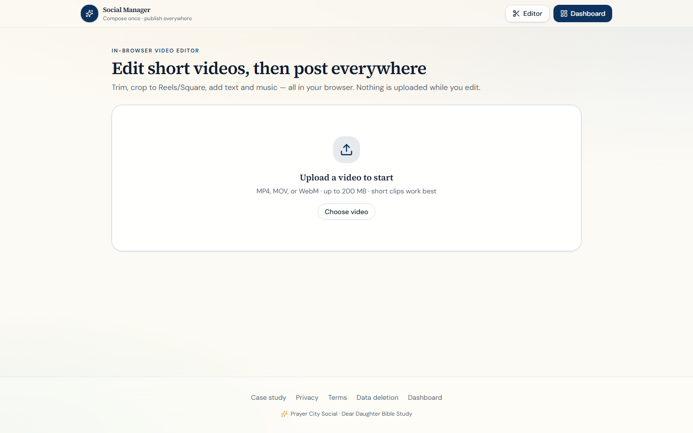

Agentic AI · Shipped Q4 2025
Prayer City Social
Multi-platform social publishing — compose once, generate AI-tailored variants, schedule or publish to 10 networks from one owned dashboard.
social.prayercityhtx.com ↗ · See our AI automation service →

Problem
Posting to every platform by hand is slow. Subscription schedulers are expensive, rented, and limited in integrations.
Solution
- Next.js dashboard — one compose box, AI variants per network
- 10 platforms: Instagram, Facebook, YouTube, TikTok, LinkedIn, X, Threads, Bluesky, Spotify, WhatsApp
- Queue worker for scheduled and instant publishing with retry logic
- Multi-provider AI (Groq, DeepSeek, OpenAI) with automatic failover
- In-browser video editor for Reels and short-form clips
- PocketBase auth and media storage behind Cloudflare Tunnel
Results
The team posts across ten channels from one system they own — no per-seat SaaS fees, no platform caps. AI generates network-specific copy while humans approve before publish. Estimated $1,200+/year saved vs. comparable subscription tools for a 3-person team.
Technology
Screenshots


"We needed to post across ten social platforms without paying per-seat fees forever. Abe Stack built a custom publishing platform with AI variants, scheduling, and OAuth to every channel we use."
Outgrow your social SaaS bill?
Explore AI automation